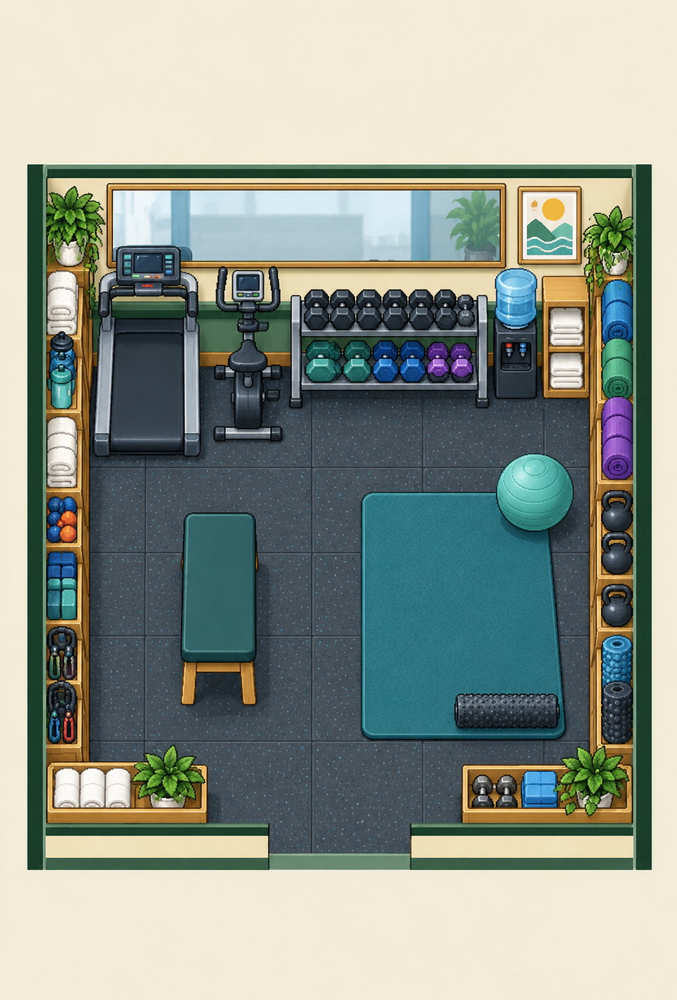

The complete concept sets the sizes, proximity and overlapping equipment. The playable room uses pieces derived from it. Wall rows are continuous when doors are closed; a selected doorway opens its own equipment or storage section. The bench, stretch station and connected aisle remain for every doorway.
Necessary furniture and optional wall equipment
The bench and its front rail, stretch mat, ball, roller, two staff contacts, approaches and rubber aisle stay for all doors. Optional cardio, weights, hydration and perimeter storage sections hide for their owned doorway. A corner section can serve both adjoining wall doors. Mirror, abstract poster and towel hooks follow their own north door and backing section.
| Item | Class | Hides for |
|---|---|---|
| Treadmill · rear bay 1 | Optional | N1, WA |
| Wall mirror · section 1 | Optional | N1 / backing |
| Exercise bike and adjoining weights · rear bay 2 | Optional | N2 |
| Wall mirror · section 2 | Optional | N2 / backing |
| Dumbbell rack · rear bay 3 | Optional | N3 |
| Wall mirror · section 3 | Optional | N3 / backing |
| Water cooler, towel cubby and weights · rear bay 4 | Optional | N4, EA |
| Mirror edge and abstract motivational poster | Optional | N4 / backing |
| Towel, bottle and block cubbies · west section 1 | Optional | N1, WA |
| Towel, bottle and block cubbies · west section 2 | Optional | WB |
| Towel, bottle and block cubbies · west section 3 | Optional | WC |
| Towel, bottle and block cubbies · west section 4 | Optional | S1, WD |
| Rolled-mat and accessory rack · east section 1 | Optional | N4, EA |
| Rolled-mat and accessory rack · east section 2 | Optional | EB |
| Rolled-mat and accessory rack · east section 3 | Optional | EC |
| Rolled-mat and accessory rack · east section 4 | Optional | S4, ED |
| Folded towel tray · front section 1 | Optional | S1, WD |
| Bottle tray · front section 2 | Optional | S2 |
| Dumbbell and yoga-block tray · front section 3 | Optional | S3 |
| Rolled-mat tray · front section 4 | Optional | S4, ED |
| Padded rest bench · adult seated south | Necessary | — |
| Stretch mat · standing staff station · walkable | Necessary | — |
| Exercise ball · stretch station equipment | Necessary | — |
| Foam roller · front of stretch station | Necessary | — |
| Rubber gym floor and connected aisle · walkable | Necessary | — |
| Wall towel hooks · above dumbbell bay | Optional | N3 / backing |
| Bench camera-side rail and legs · exact-source foreground | Necessary | — |
| Seated bench and standing stretch contacts, approaches and aisle | Necessary | — |